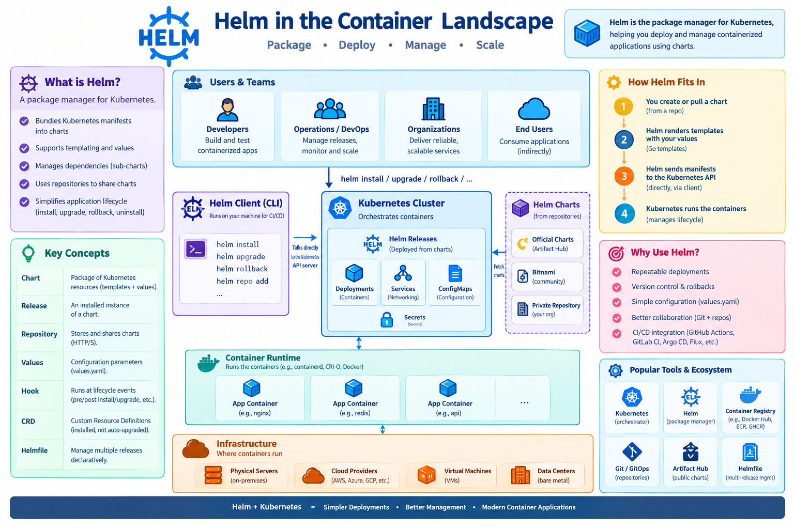

Helm: Package Management for Kubernetes¶
Learning Objectives¶
Learning Objectives
By the end of this chapter, participants will be able to: - Understand the purpose of a package manager in the Kubernetes ecosystem. - Differentiate between Helm Charts, Values, and Releases. - Install, upgrade, and rollback applications using Helm. - Create and customize a basic Helm Chart for AI workloads. - Evaluate the trade-offs between Helm's templating and other configuration management methods. - Implement Helm hooks for custom deployment lifecycle management (e.g., DB migrations). - Manage sensitive data in Helm charts using secrets management tools. - Orchestrate complex applications using Helm dependencies (Umbrella Charts).
Overview¶
As Kubernetes applications grow in complexity, managing dozens of YAML manifests becomes error-prone and tedious. Helm solves this by introducing a package management layer.
Helm is to Kubernetes what apt or yum is to Linux: a single source of truth for "how to run" a specific application. Instead of applying individual files, Helm allows you to bundle a set of Kubernetes resources into a versioned package called a Chart, which can then be parameterized and deployed as a Release.
Core Sections¶
Helm Architecture and Terminology¶
Helm v3 operates as a client-side tool that communicates directly with the Kubernetes API server, eliminating the need for a server-side component (Tiller) found in earlier versions.
| Term | Meaning |
|---|---|
| Chart | A directory containing Chart.yaml, values.yaml, and a templates/ folder. |
| Release | A specific instance of a Chart deployed to a cluster (e.g., my-llm-prod). |
| Repository | An HTTP(S) server that stores packaged charts (index.yaml). |
| Values | Configurable parameters in values.yaml that are rendered into templates. |
| Hook | A manifest executed at specific lifecycle events (pre-install, post-upgrade). |
| CRD | Custom Resource Definitions that Helm can install but does not upgrade automatically. |


Figure 1: The Helm landscape and its integration with the Kubernetes ecosystem.
Why Use Helm for AI Infrastructure?¶
AI workloads often require complex setups involving GPUs, persistent volumes for model weights, and specific environment variables.
- Repeatable Deployments: A single
helm installcan provision an entire stack (vLLM engine, Redis cache, and FastAPI frontend). - Version Control: Charts are versioned, allowing for instant rollbacks (
helm rollback) if a new model version causes a performance regression. - Parameterization: Researchers can use a single chart but pass different
values.yamlfiles fordev(CPU-only) andprod(Multi-GPU). - CI/CD Integration: Helm integrates seamlessly with GitOps tools like ArgoCD and Flux to automate "Code to Cluster" workflows.
Installation and Basic Operations¶
Setup¶
Helm is a client-side binary. Install it using the appropriate method:
| OS | Command |
|---|---|
| Linux | curl https://raw.githubusercontent.com/helm/helm/main/scripts/get-helm-3 | bash |
| macOS | brew install helm |
| Windows | choco install kubernetes-helm |
Common Commands Cheat-Sheet¶
| Action | Command | Example |
|---|---|---|
| Add Repo | helm repo add <name> <url> |
helm repo add bitnami https://charts.bitnami.com/bitnami |
| Update Cache | helm repo update |
helm repo update |
| Install | helm install <release> <chart> |
helm install my-redis bitnami/redis --set auth.password=Secret123 |
| Upgrade | helm upgrade <release> <chart> |
helm upgrade my-redis bitnami/redis --set replicaCount=3 |
| Rollback | helm rollback <release> <rev> |
helm rollback my-redis 1 |
| Uninstall | helm uninstall <release> |
helm uninstall my-redis |
| Render Locally | helm template <chart> |
helm template my-chart ./my-chart |
| Validate | helm lint <chart> |
helm lint ./my-chart |
Creating Your First Chart¶
A Helm chart is essentially a directory of templates that use Go-template syntax (e.g., {{ .Values.replicaCount }}) to inject dynamic values into YAML manifests.
1. Scaffold a New Chart¶
2. Define Runtime Values (values.yaml)¶
The values.yaml file acts as the primary configuration interface for the user.
replicaCount: 2
image:
repository: nginx
tag: "1.25-alpine"
pullPolicy: IfNotPresent
service:
type: ClusterIP
port: 80
3. Templating the Deployment¶
In templates/deployment.yaml, we replace static values with template calls:
spec:
replicas: {{ .Values.replicaCount }}
template:
spec:
containers:
- name: {{ .Chart.Name }}
image: "{{ .Values.image.repository }}:{{ .Values.image.tag }}"
4. Deploy and Manage¶
# Install the chart
helm install hello ./hello-world --namespace demo --create-namespace
# Upgrade to increase replicas
helm upgrade hello ./hello-world --set replicaCount=5
Advanced Deployment Patterns¶
AI Model Deployment: Example values.yaml¶
When deploying an AI model (e.g., vLLM), the values.yaml must handle GPU resources and large model weights.
# values-ai-model.yaml
replicaCount: 1
image:
repository: vllm/vllm-openai
tag: "v0.4.0"
resources:
limits:
nvidia.com/gpu: 1
memory: "40Gi"
cpu: "8"
model:
name: "meta-llama/Meta-Llama-3-8B"
tensorParallelSize: 1
persistence:
enabled: true
storageClass: "premium-rwo"
size: 100Gi
mountPath: /models
Advanced Templating for AI Workloads¶
Basic value replacement is often insufficient for AI infrastructure, where you may need to switch between entirely different hardware profiles (e.g., CPU vs GPU) or support multiple types of accelerators. Using advanced Go-templates allows you to avoid "YAML sprawl" by maintaining a single chart that adapts to the target environment. For a broader overview of how Helm fits into the Kubernetes orchestration landscape alongside tools like Kustomize, see Kubernetes (K8s) for AI.
1. Conditional Resource Allocation
Use {{ if ... }} {{ else }} {{ end }} to toggle between CPU-only and GPU-enabled configurations. This is critical for teams that develop on CPU-based environments but deploy to GPU clusters.
Updated values.yaml:
templates/deployment.yaml snippet:
resources:
limits:
{{- if .Values.gpuEnabled }}
nvidia.com/gpu: 1
memory: "40Gi"
{{- else }}
cpu: "4"
memory: "16Gi"
{{- end }}
2. Dynamic Accelerator Configuration
Use {{ range }} to iterate over a list of required accelerators. This is useful when deploying to clusters with mixed hardware or using NVIDIA Multi-Instance GPU (MIG) profiles.
Updated values.yaml:
templates/deployment.yaml snippet:
Advanced Concepts¶
- Umbrella Charts: A master chart that declares other charts as dependencies. Used to deploy an entire AI platform as a single unit.
- Helm Hooks: Special annotations (e.g.,
pre-install) that trigger a Kubernetes Job to run database migrations before the application pods start. - OCI Registries: Modern Helm versions allow you to store charts in the same OCI registry as your Docker images (
helm push).
Summary Checklist¶
- [ ] Distinguish between a Helm Chart, a Release, and a Repository.
- [ ] Install the Helm CLI and add a public chart repository.
- [ ] Deploy an application using
helm installand override values via the CLI. - [ ] Create a custom chart using
helm createand implement basic templating. - [ ] Perform a
helm upgradeand ahelm rollbackto manage a release lifecycle. - [ ] Design a
values.yamlfile that handles GPU resource limits and model weight paths.
Assignments¶
Assignment.1: Chart Exploration
Find a popular public chart on Artifact Hub (e.g., Redis or PostgreSQL). Install it in your local cluster, then use helm get values <release> to see the default configuration.
Solution: Exploration
Search Artifact Hub, run helm repo add, then helm install. Use the get values command to identify how the maintainers structured the configuration.
Assignment.2: Value Overrides
Deploy a sample application using a Helm chart, but override at least three default values (e.g., replica count, image tag, and service port) using a custom my-values.yaml file.
Solution: Value Overrides
Create a file my-values.yaml with the specific keys you want to change. Run helm install my-app <chart> -f my-values.yaml.
Assignment.3: Lifecycle Management
Perform a successful deployment, then update a value in your chart. Upgrade the release, verify the change, and finally roll back to the previous version using helm rollback.
Solution: Lifecycle
Use helm install, then helm upgrade with a changed value. Check the pod status with kubectl get pods. Finally, run helm rollback <release> 1 to return to the initial state.
References¶
- Official Helm Documentation: helm.sh/docs/
- Chart Best Practices: helm.sh/docs/topics/charts/
- Artifact Hub: artifacthub.io
Self-Evaluation¶
What is a Helm 'Chart' and how does it differ from a 'Release'?
A Chart is a package containing a collection of Kubernetes resource templates and a values.yaml file. A Release is a specific instance of a Chart deployed to a cluster with a unique name and set of configuration values.
How does Helm use Go templates to allow for parameterization of Kubernetes manifests?
Helm uses Go-template syntax (e.g., {{ .Values.replicaCount }}) within its YAML files. When helm install is run, Helm replaces these placeholders with actual values from the values.yaml file or command-line overrides.
What is the benefit of using helm rollback in a production environment?
helm rollback allows an administrator to instantly revert a deployment to a previous stable version by updating the release state in Kubernetes, minimizing downtime after a failed upgrade.
What is an 'Umbrella Chart' and when should it be used?
An Umbrella Chart is a chart that does not contain its own templates but instead declares other charts as dependencies. It is used to manage and deploy a complex application composed of multiple independent services as a single unit.
How do Helm hooks allow for custom deployment lifecycle management?
Helm hooks are special annotations (e.g., pre-install) that tell Helm to run a specific resource (like a Job) at a certain point in the release lifecycle, ensuring tasks like database migrations are completed before the app starts.
What's Next?¶
You have now mastered the art of packaging and deploying containers, from the local Docker/Podman level up to enterprise-scale Kubernetes and OpenShift clusters.
To tie everything together, head over to Bridging Containers and CI/CD to learn how to automate this entire flow into a production-ready pipeline.